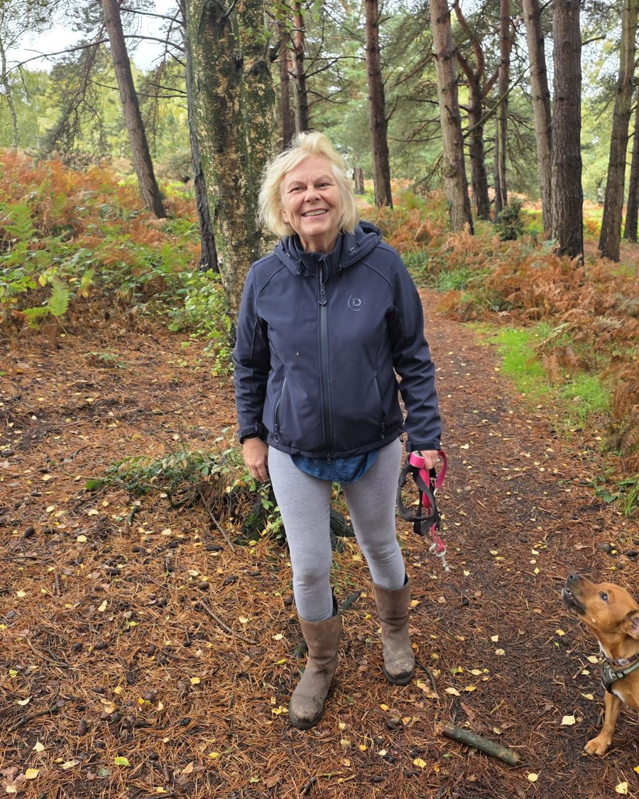

About Sue
HCPC-registered physiotherapist, HCPC number PH43969.

I'm Sue Coffee, a physiotherapist with 30 years' experience in health care and senior clinical management in the UK and the USA.
I trained at Frimley Park Hospital in Surrey, working through all the general rotations, then moved into private practice and sports injury clinics as a senior physiotherapist in outpatients and orthopaedics.
I then spent six years in the United States, where I became a clinical specialist at the Rehabilitation Institute of Chicago, treating neuromuscular conditions and leading the training and development of staff. From there I went on to manage allied health services, including physiotherapists, occupational therapists, dietitians, and speech and language therapists.
Since coming back to the UK in 2001, I've continued in management while developing staff health and wellbeing services and musculoskeletal rehabilitation for staff after injuries, particularly work-related injuries. Work-related injuries, musculoskeletal therapy and pain management have been my field ever since.
Now I work independently, treating and advising people so they understand their condition: how to prevent flare-ups, how to treat the source of the problem, and how to keep their quality of life and function at their best.
I take time to understand you and your problem properly, and I want you to leave every session knowing what's going on and what you can do about it yourself.
HCPC registered: PH43969
You can check my registration on the HCPC register.